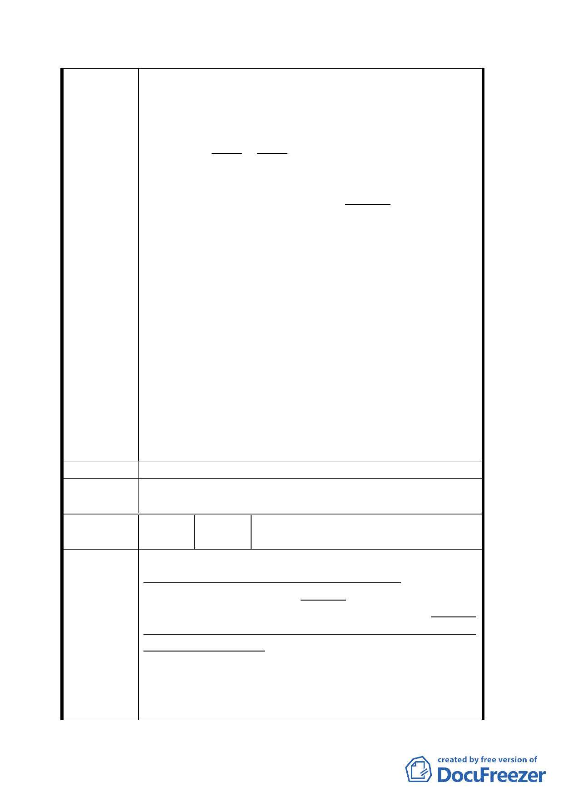

２． 受恵“搬遷補助金”之對象當可大為減
少。其數或可減至原來所估之三分之一。
３． 分文不出自國庫、“搬遷補助金”之支
付、全部來自境内居民自願提供之互助基金。
４． 給恵 受恵、両者為互相互對立、而立場
相反。前者理應對、後者組織内容之真實性、
相當関心。後者之不實浮報、可直接影響前者
之實際負担。因両者同為境内人、蓄意欺騙境
内知情人之可能性較低、雖然現今社會到處有
“道高一尺、魔高一丈”。
力求以最高可能之高價、出售國有土地絶非唯一良
策。對國家社會有益之方式及途径、非限以高價出
售土地為最佳。從高價出售國有土地所得僅為一時
之收入、長期間能継続對國家社会獲益之極富遠見
措施、其受益累積或可遠超以高價出售土地之一時
総所得。萬勿因過分注重公有土地之售價、而致成
因小而失大。
人民之生命財産及生計謀生凌駕、政府策求以最高
價格、出售公用土地任務之上。最重要者為、人民
的生命財産及生計謀生、必須獲得充分保障。此為
政府之首一要務。多用依法給與人民、而避免使用、
依法對人民執行強制行為、民主社會應有之現象。
建 議 辦 法 同陳情理由。
委員會決
議
同決議一、二。
編
號
23
陳情人
陳
93.11.26
張
秋
月
貴陽街側合法建物之概略 及 陳 情
漢中段土地 =中華路、貴陽街、西寧南路、和長沙
街區域之非公用國有土地、即為台北市政府變更台
陳情理由
北市萬華區中華路理教公所附近第四種商業區變更
為廣場用地計畫案”之土地。
貴陽基地 =敝人等所有完全合法建築物之基地、為
上述漢中段土地之一小部分。
（１）在萬華區自中華路和貴陽街 2 段之轉角起、
朝西沿貴陽街至西寧南路口地段之現有建築物、係
二九